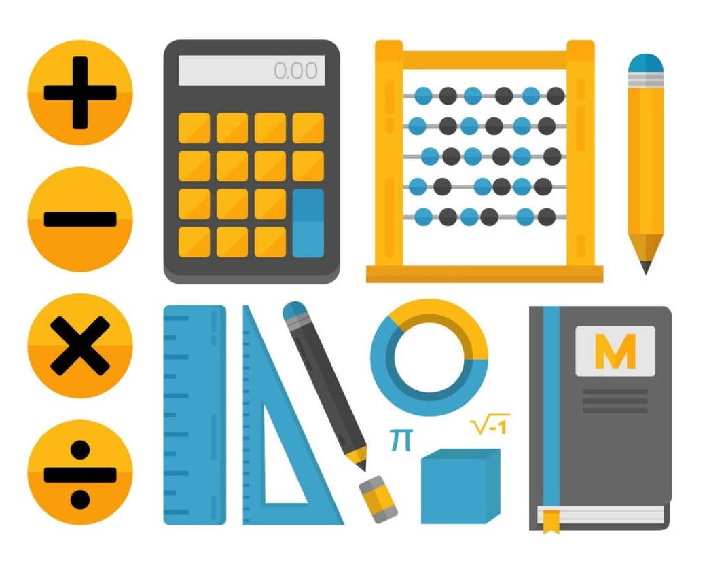

Learning
From creating computer games to programming technology for the CIA or building the next Facebook, there are a lot of amazing things you can do with a computer science degree. It’s an exciting and constantly evolving field with virtually unlimited growth. And did you know that several successful celebrities are former computer science majors? Facebook creator Mark Zuckerberg, Google founders Larry Page and Sergey Brin, and even comedian Jimmy Fallon all got their start by studying computer science.
A computer science major involves the study of computers and programming languages. Majoring in this field will help you develop great technical skills and give you a new perspective on problem-solving. You’ll learn how to break problems apart and execute them effectively.
Computer
One of the best laptops for programming can have a big impact on your working life. If you're a programmer, you'll know the benefit of having a powerful laptop, or if not, the pain of having a sluggish machine. While computer programming or coding doesn't necessarily need the most powerful laptop money can buy, your work probably also involves tasks like complex image editing that do require more powerful hardware.And, of course, testing and running the apps, websites or games you've created, often using emulation, can also be fairly intensive. With this in mind, we've rounded up the best laptops that coders and developers can use for day-to-day work.
A good way to stay ahead in the coding world is to make sure that you have the best laptop for programming which will help you to transform your ideas into a reality without delays. In short, perfect laptop speeds up tasks and processes, which help to increase productivity.
Science

Computer Science is the study of computers and computational systems. Unlike electrical and computer engineers, computer scientists deal mostly with software and software systems; this includes their theory, design, development, and application.Principal areas of study within Computer Science include artificial intelligence, computer systems and networks, security, database systems, human computer interaction, vision and graphics, numerical analysis, programming languages, software engineering, bioinformatics and theory of computing.
Although knowing how to program is essential to the study of computer science, it is only one element of the field. Computer scientists design and analyze algorithms to solve programs and study the performance of computer hardware and software. The problems that computer scientists encounter range from the abstract-- determining what problems can be solved with computers and the complexity of the algorithms that solve them – to the tangible – designing applications that perform well on handheld devices, that are easy to use, and that uphold security measures.
Galery